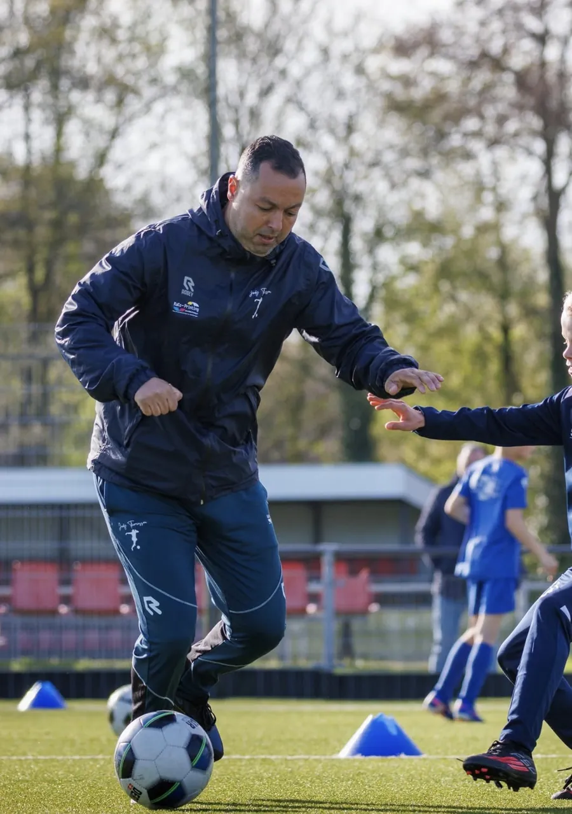
Trainers uit het betaald voetbal
Jordy speelde zelf bij FC Den Bosch, Helmond Sport en De Graafschap. Zijn trainers spelen of speelden ook op dat niveau. Je kind leert wat aan de top echt werkt, in taal die een kind snapt.
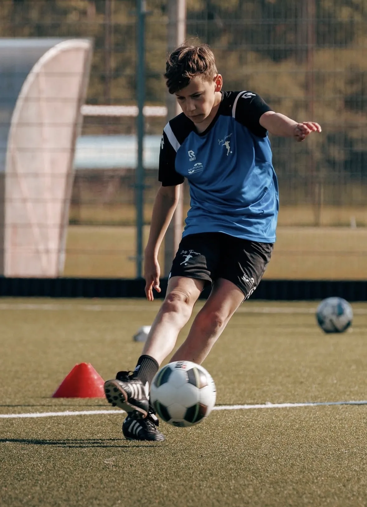
Voetbalschool in Den Bosch · vanaf 4 jaar
Waarom ouders voor Jordy kiezen

Jordy speelde zelf bij FC Den Bosch, Helmond Sport en De Graafschap. Zijn trainers spelen of speelden ook op dat niveau. Je kind leert wat aan de top echt werkt, in taal die een kind snapt.
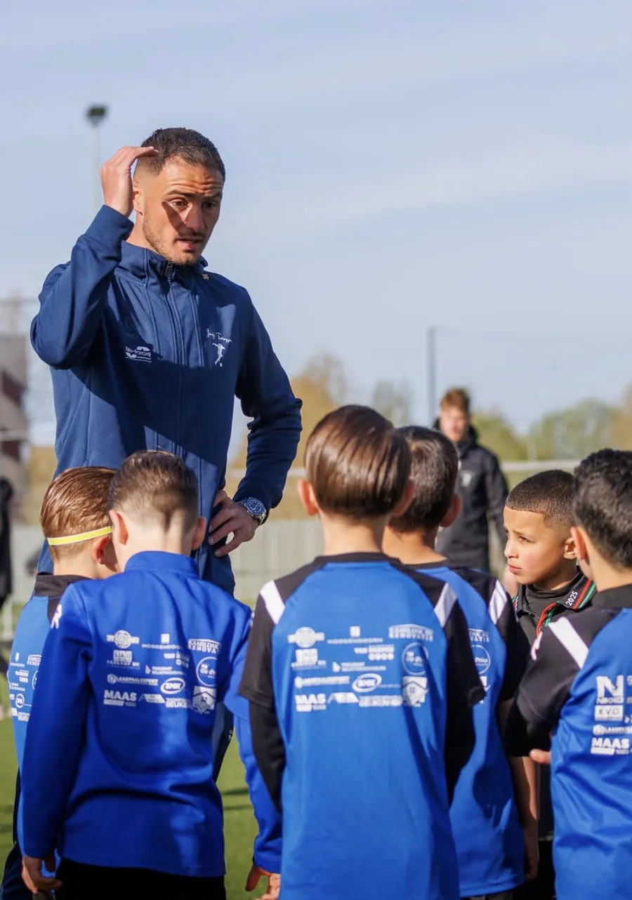
Groepen zijn ingedeeld op leeftijd en niveau, vanaf 4 jaar. Ouders schrijven in hun reviews over kleine groepjes met twee trainers erbij, en over kinderen die elke week iets nieuws meenemen.
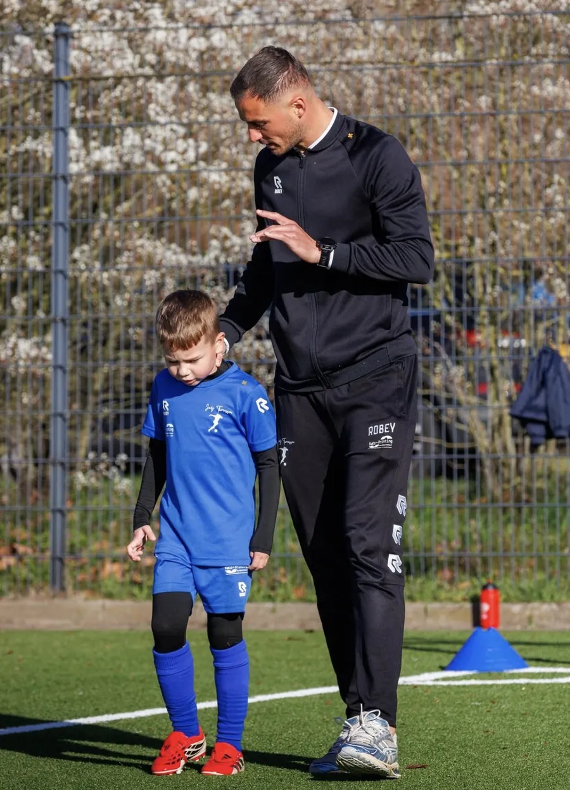
Je vraagt de proefles aan via WhatsApp of het formulier. Wij plannen een tijd die past bij de leeftijd van je kind. Pas daarna beslis je of je doorgaat.
Het aanbod
Van de eerste balcontacten op je vierde tot de laatste stap naar een BVO. Kies wat bij jouw kind past.
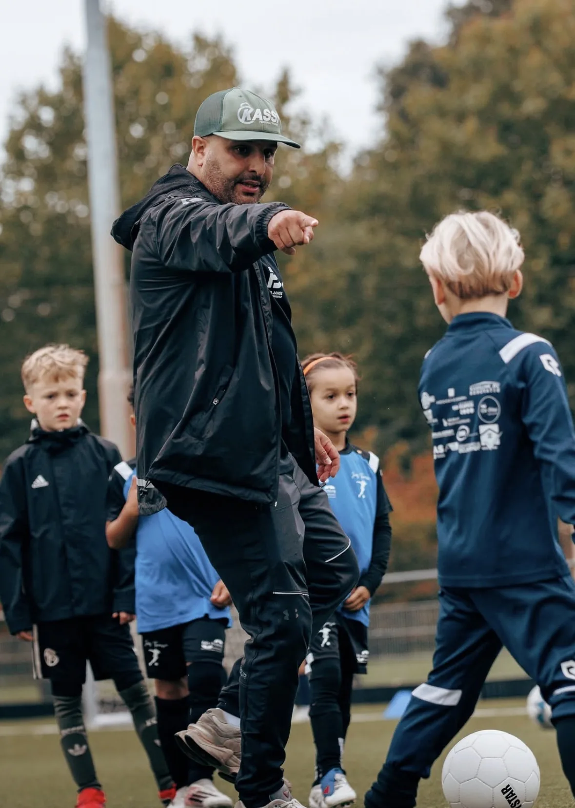
Wekelijks een uur trainen op techniek, duels en inzicht, ingedeeld op leeftijd en niveau.
125 euro per 3 maanden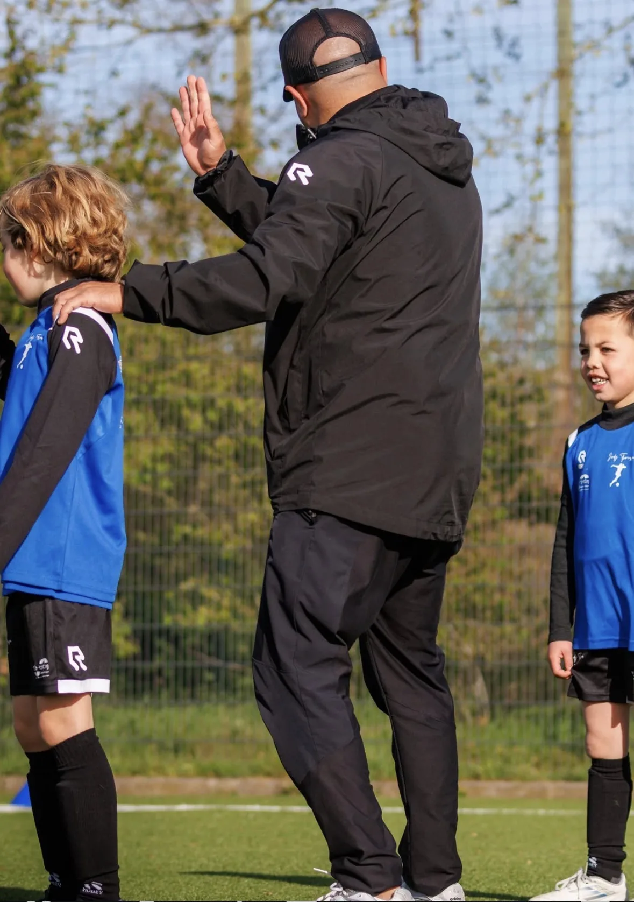
1-op-1 of 1-op-2, met een plan dat helemaal om jouw doelen draait: techniek, snelheid, kracht of inzicht.
Prijs op aanvraag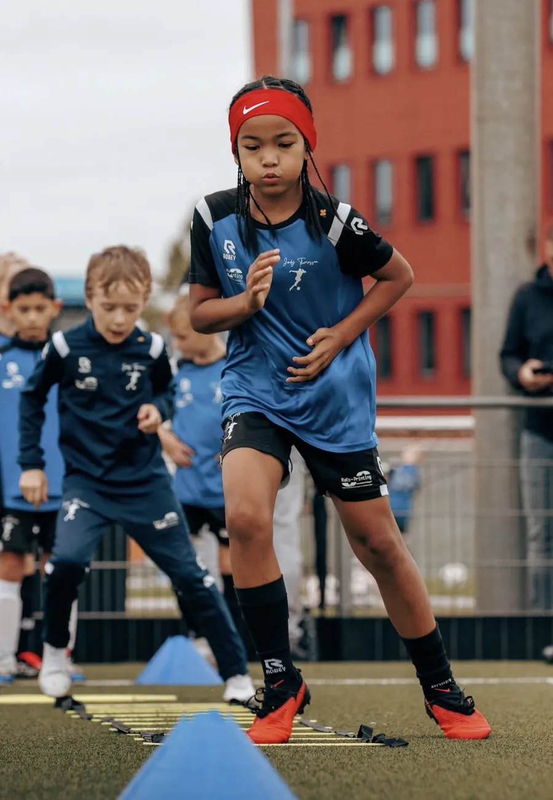
Trainingen en Ladies Only-clinics voor meiden en vrouwen die beter willen worden.
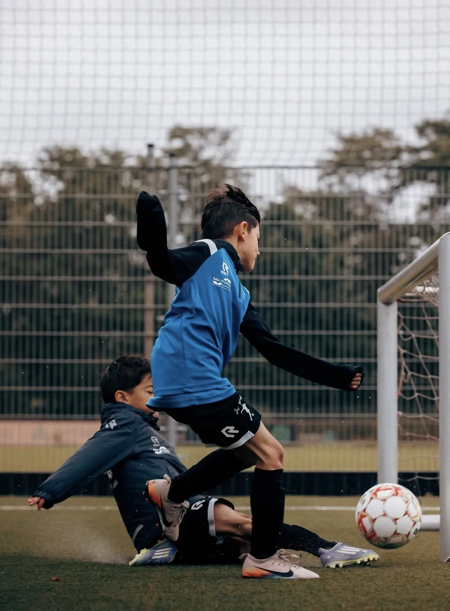
Speel je al bij een betaaldvoetbalorganisatie? Extra begeleiding om die kans te pakken.
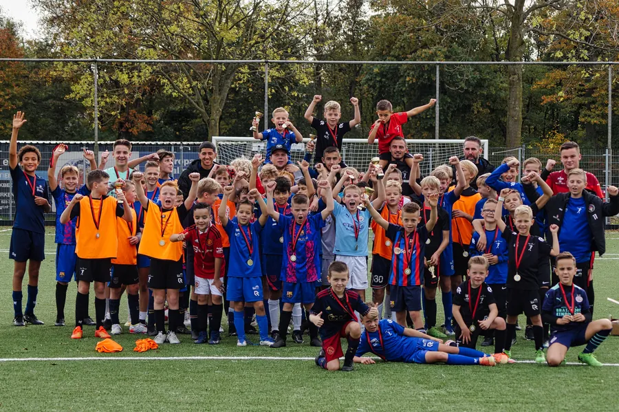
Drie uur trainen bij een club in de buurt, met scouts langs de lijn.
50 euroKijk mee op het veld
Rechtstreeks van het Instagram-kanaal van de voetbalschool. Klik op een video om hem met geluid te bekijken.
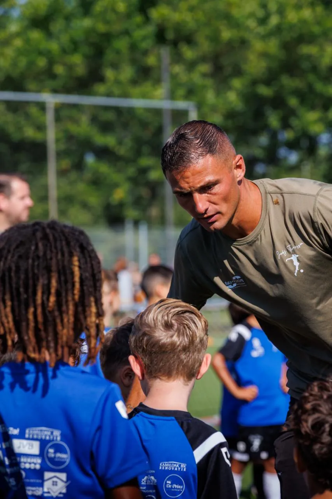
Over Jordy Thomassen
Jordy (Den Bosch, 1993) kwam uit de jeugd van BVV en FC Den Bosch en speelde als spits jarenlang betaald voetbal.
Wat begon met het trainen van zijn neefje op een veldje in de buurt, groeide uit tot een voetbalschool waar wekelijks honderden spelers trainen en waar clubs hun complete jeugdafdeling aan toevertrouwen.
Wat ouders en spelers zeggen
Onze zoon James gaat met enorm veel plezier naar de voetbalschool. Hij leert er ontzettend veel en we merken echt dat hij grote stappen maakt, technisch én in zijn zelfvertrouwen. De trainers nemen de tijd voor ieder kind. James kijkt elke week uit naar de training.
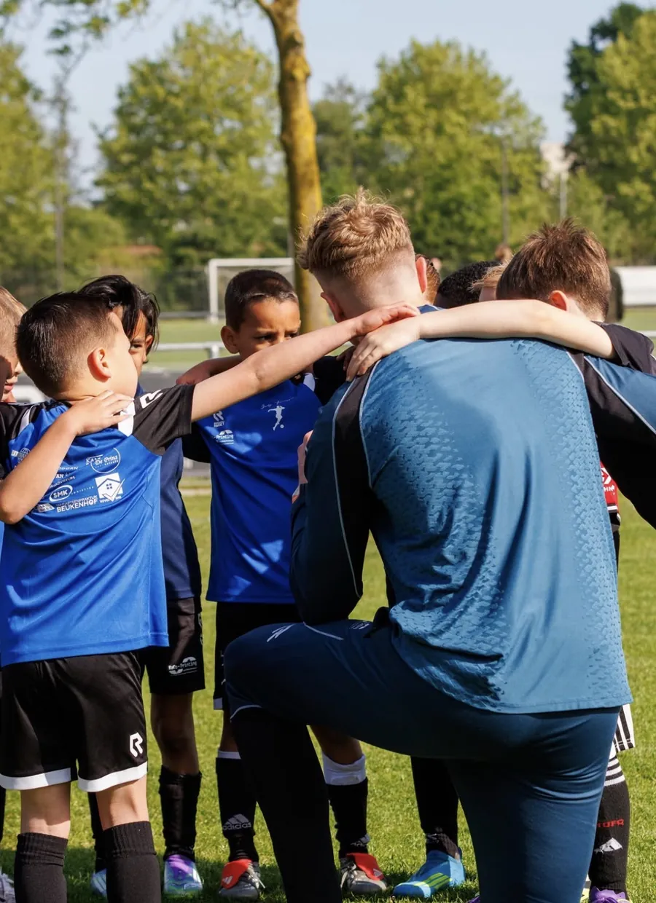
Leuke en leerzame voetbalschool met goede trainers. Plezier en persoonlijke groei staan voorop en ik zie mijn zoontje met de week progressie boeken. Mooie aanvulling naast zijn clubtrainingen.
Onze dochter traint met veel plezier bij de voetbalschool en leert er ontzettend veel. We zien haar groeien in techniek, zelfvertrouwen en spelinzicht. Fijne trainingen, goede begeleiding.
De deelnemers worden verdeeld in kleine groepjes, met bij elke groep twee trainers die zorgen voor overzicht en begeleiding.
Goede trainingen en echt aandacht voor individuele spelers. Mijn zoon gaat hier graag 1 op 1 trainen met verschillende trainers en leert er enorm veel van.
Sinds een paar maanden zit onze zoon hier op keeperstraining. Hij leert erg veel van Keano en gaat elke week met veel plezier.
Hier leren ze echt wat. Motivatie en discipline zijn echt terug te zien. Blij dat we de keuze hebben gemaakt om bij Jordy te gaan trainen. In korte tijd heeft ons zoontje al stappen gezet.
Programma
Drie uur trainen bij een club in de buurt, voor geboortejaren 2011 t/m 2020. Met scouts langs de lijn.
Zo werkt het
Via WhatsApp of het formulier. Naam, geboortejaar en of je kind al bij een club speelt is genoeg.
Binnen 24 uur hoor je wanneer de groep van die leeftijd traint: zondag t/m donderdag op BVV, vrijdag bij CHC.
Een uur meetrainen, gratis. Bevalt het, dan schrijf je in voor 125 euro per drie maanden. Zo niet, dan zit je nergens aan vast.
Deze bedrijven staan achter de voetbalschool
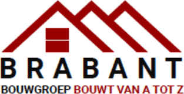
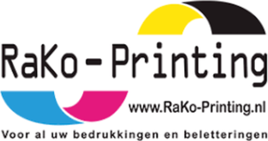
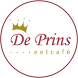
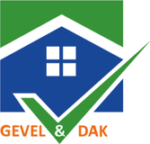
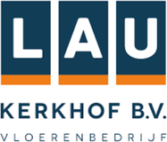
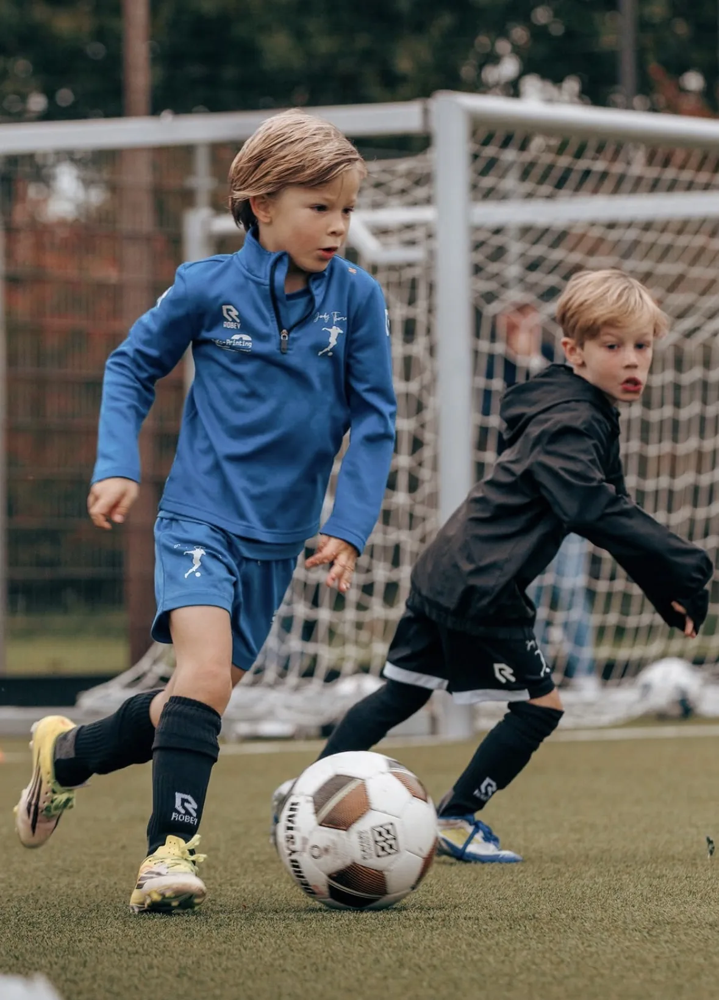
Klaar voor de eerste training?
Je hoort binnen 24 uur wanneer je kind kan meetrainen. Geen abonnement, geen verplichting.
Wil je een gratis proefles plannen of heb je een vraag over de trainingen? Stuur een berichtje, je krijgt binnen 24 uur antwoord van het team.
Chat openen